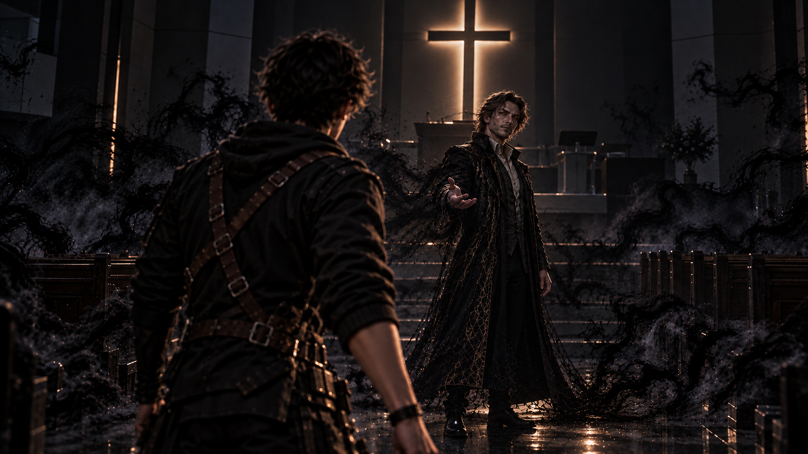
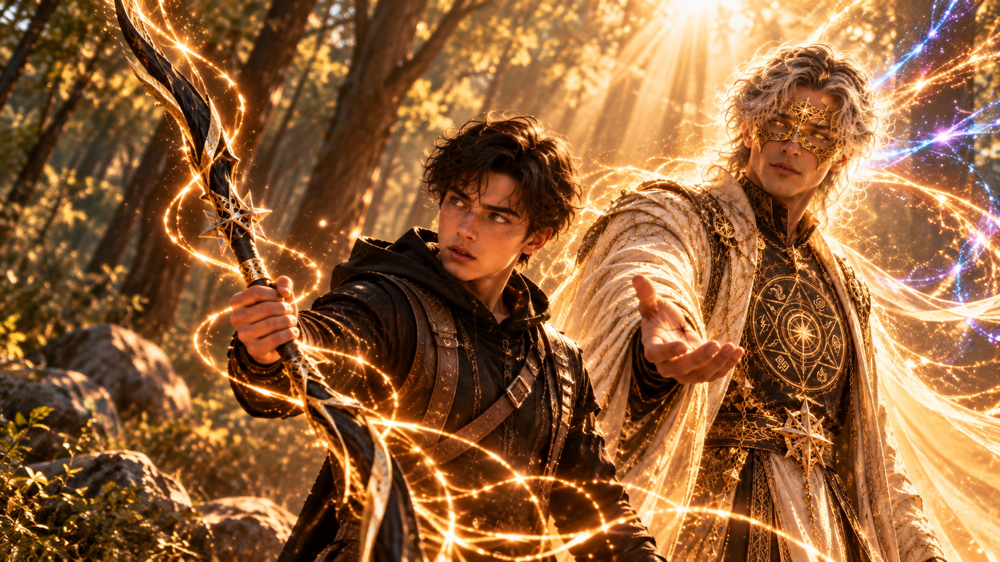

WHITE MAGIC ART STUDIO
第二十三章
失落的繼承者
美國・猶他州・鹽湖城・東湖教會
柴克衝出巷口時，幾乎已經感覺不到自己的雙腿。
他不知道自己究竟跑了多久。
一路上，哥哥和妹妹的身影始終在腦海裡揮之不去。
克里斯最後抬起的那隻手、那句不合時宜的玩笑，還有安娜故作輕鬆的笑容。
待會東湖教會門口集合喔！
那是他離開前喊出的最後一句話。
他不知道兩人是否聽見。
但他必須相信，他們會來。
終於，熟悉的教會建築出現在街道盡頭。
「到了……！」
柴克加快腳步，衝上入口前的台階，伸手推向大門。
砰！
門沒有開。
他愣了一下，重新握住門把。
「……什麼？」
鎖住了。
柴克用力拉扯，又試著往內推，厚重的鋼化玻璃門卻始終紋絲不動。
「不是吧……」
他退後一步，抬頭確認門上的招牌。
東湖教會。
沒錯，就是這裡。
他曾經在這間教會裡，看見那座十字架，隨後進入那個不可思議的空間。
如果能再次進去……
如果真的能見到拉比……
柴克咬緊牙關，再次撞向大門。
砰！
沉悶的聲響在空蕩的街道上迴盪。
門依舊緊閉。
「拜託……偏偏這種時候！」
他焦急地環顧四周，試圖尋找其他入口。
然而，遠處忽然傳來一聲雷鳴。
轟隆——！
柴克猛然回頭。
濃重的黑霧正沿著街道迅速逼近。
霧氣翻騰之間，一道身影緩緩浮現。
那張臉……
即使相隔如此遙遠，他也不可能認錯。
詹姆斯・安德烈。
他的父親。
不。
那是佔據著父親身體的魔神。
柴克的呼吸頓時亂了。
「不……」
他再次抓住門把。
「快點……拜託，快開啊！」
黑霧越來越近。
柴克甚至已經能看清魔神嘴角那抹令人不安的笑容。
他退後幾步，正準備再次撞向大門——
轟隆！
一道金色雷電突然劃破天空。
耀眼的光芒從天而降，猛然落在柴克與魔神之間。
強烈的氣流掀起他的衣角。
柴克下意識抬起手，遮住眼睛。
待光芒散去，一道高大的身影已經站在前方。
黑色風衣隨風揚起。
熟悉的背影，讓柴克怔在原地。
「雷叔叔……？」
雷・安德烈沒有回頭。
黑色菱形水晶——阿法，正懸浮在他身旁。
細密的金色電流沿著水晶稜角流動，映亮他冷峻的側臉。
「快做你該做的事。」
雷的聲音低沉而平穩。
柴克張了張嘴。
「可是門——」
話還沒說完，阿法驟然亮起。
數道金色雷電疾射而出，在半空中交錯成鎖鏈，迅速纏住魔神的身影。
黑霧劇烈翻騰。
魔神被迫停下，緩緩低頭望向那些束縛自己的雷光。
雷緊盯著前方。
「柴克！」
他沉聲喝道。
「別浪費時間！」
柴克猛然回神。
他看向眼前緊閉的大門，又低頭望著自己的雙手。
在寇德薩拉的試煉中，他曾經釋放出金色雷電。
在更早之前，他也曾用同樣的力量突破克里斯的屏障。
那不是錯覺。
雖然直到現在，他仍不清楚自己究竟屬於哪一種類型的聖術師。
但至少，他知道那股力量確實存在。
柴克緩緩握緊右拳。
「集中……」
他低聲喃喃。
「就像那時候一樣……」
他閉上眼睛，試圖找回試煉時的感覺。
那股從胸口深處湧起，沿著手臂奔流的力量。
片刻後，掌心傳來一陣酥麻。
柴克睜開眼睛。
幾道細小的金色電流，正沿著指節跳動。
「有了……！」
他深吸一口氣，朝大門揮出一拳。
砰！
金色雷光在門板上炸開。
整扇玻璃門劇烈震動，表面浮現數道裂紋，卻仍未完全破開。
遠處，魔神忽然笑了。
「呵……哈哈哈哈！」
黑霧在金色鎖鏈之間翻湧。
「雷・安德烈！」
牠抬頭望向雷。
「你還能撐多久呢？」
雷沒有理會。
「專心！柴克！」
柴克咬緊牙關。
他再次望向門板。
腦海中，克里斯與安娜的身影一閃而過。
拉比在等你！
哥哥最後的話，仍清晰地留在耳邊。
柴克重新握緊拳頭。
金色雷光再次凝聚。
「喝啊——！」
轟！
第二拳擊中大門。
鋼化玻璃終於承受不住衝擊，伴隨一聲巨響向內碎裂。
柴克踉蹌了一步，隨即穩住身形。
他回頭望向雷。
叔叔仍背對著他，雙手維持著雷電的束縛。
「去吧。」
柴克深深看了他一眼。
「叔叔……一定要撐住！」
雷沒有回答。
只是微微點頭。
柴克不再猶豫，轉身衝進教會。
＊
教會裡安靜得令人不安。
柴克沿著記憶中的走廊奔跑，鞋底踏過地面的聲響，在空蕩的建築裡不斷迴盪。
他衝上樓梯。
一步。
兩步。
每上一階，心中的焦急便加深一分。
他不知道外面的雷叔叔還能撐多久。
也不知道克里斯和安娜現在究竟怎麼樣了。
但他不能停下。
終於，二樓聚會主堂的大門出現在眼前。
柴克伸手推開。
主堂裡空無一人。
整齊排列的長椅靜靜佇立，講台上的十字架仍在原本的位置。
微弱的天光穿過窗戶，在地板上留下細長的光影。
柴克緩緩走向講台。
他抬起頭。
望著那座十字架。
「拉比……」
他的聲音有些沙啞。
「我需要見祢一面。」
沒有回應。
柴克又往前走了幾步。
「我知道祢聽得見。」
他緊緊握住雙手。
「我不知道自己該怎麼做，也不知道自己究竟能做到什麼……」
他停頓了一下。
「可是，我真的需要見祢一面。」
主堂仍然安靜。
柴克望著十字架，聲音逐漸低了下來。
「拜託……」
「告訴我，該怎麼救大家。」
就在這時，一道聲音忽然從身後傳來。
「所以……」
柴克猛然回頭。
「這就是你所期待的嗎？」
那不是拉比的聲音。
下一瞬間，主堂裡的光線驟然暗了下來。
黑霧從四周湧出，沿著長椅、牆壁與天花板迅速蔓延。
柴克後退一步。
講台中央，一道人影逐漸浮現。
魔神。

牠站在十字架前，嘴角帶著熟悉的笑容。
「所有人都因你而消失。」
牠緩緩開口。
「而你呢？」
牠環顧四周。
「卻像個傻子一樣，跑來這種破爛地方。」
魔神重新望向柴克。
「只為了見到你口中的拉比？」
柴克心頭一沉。
「雷叔叔呢？」
他望向門口。
「你把他怎麼了？！」
魔神輕輕搖頭。
「別找了。」
牠慢慢走下講台。
「你叔叔和其他家人一樣，都不在了。」
柴克的臉色瞬間變得蒼白。
「不可能……」
「不過，放心。」
魔神露出微笑。
「他們沒有死。」
牠向前一步。
「只是迷失在無盡的黑暗裡。」
牠的聲音低了下來。
「順便為我提供一些力量罷了。」
柴克握緊拳頭。
恐懼與憤怒交織在胸口。
「夠了……」
他咬緊牙關。
「你到底想要什麼？」
魔神微微挑眉。
「你忘了嗎？」
牠攤開雙手。
「我們第一次見面的時候，我就已經告訴過你了。」
魔神望著柴克。
「我要你交出體內的翼。」
柴克皺起眉頭。
「雷之翼？」
「沒錯。」
魔神指向自己的胸口。
「只要得到它，我就能脫離你父親的身體。」
牠的笑容逐漸擴大。
「獲得真正的自由。」
柴克想起雷叔叔曾經告訴他的事。
關於血祭封印，以及魔神至今仍受制於詹姆斯身體的原因。
他盯著魔神。
「你現在還不夠自由嗎？」
柴克看了一眼四周翻騰的黑霧。
「我看不出來你有什麼不能做的。」
魔神忽然笑了。
笑聲在空蕩的主堂裡迴盪。
「不，柴克。」
牠輕輕搖頭。
「我能做的，還遠遠不夠。」
魔神抬起頭。
「只要我仍被困在這具身體裡，我真正的理想國就無法誕生。」
牠重新望向柴克。
「所以，我的孩子……」
魔神緩緩伸出一隻手。
「我們聯手吧。」
柴克沒有回答。
「我可以讓你成為新世界的王。」
魔神的語氣忽然變得溫和。
「只要你加入我，我就放過你的家人。」
「他們會回到你身邊。」
牠向前一步。
「而從今以後，所有人都會聽從你的命令。」
柴克的目光微微動搖。
魔神察覺到了。
「你不必再向任何人證明自己。」
牠繼續說。
「不必再為了成為雷翼而煩惱。」
「更不需要像現在這樣，四處尋找一個根本不願意回應你的存在。」
魔神伸出手，輕輕搭在柴克肩上。
「你將成為他們的至尊。」
柴克低下頭。
「我……」
他想起克里斯。
想起安娜。
還有始終守護著他們的雷叔叔。
「我不知道……」
他的聲音很輕。
「這是不是他們想要的。」
「但這是你想要的，不是嗎？」
魔神俯身望著他。
「柴克，你一直相信的那些東西，早就已經崩潰了。」
「你現在需要的，不是信仰。」
牠停頓片刻。
「是權力。」
主堂陷入短暫的寂靜。
柴克沒有立即回答。
他低頭看著自己的雙手。
那些曾經讓他引以為傲的事物，突然顯得如此遙遠。
他曾經以為，只要自己足夠努力，就能保護重要的人。
籃球是如此。
射箭也是如此。
即使在寇德薩拉開始掌握一點聖術，他也一直試著用同樣的方法理解這份力量。
可是直到現在，他甚至連自己屬於哪一種聖術師都不知道。
他想要一把屬於自己的術器。
想要變得更強。
想要阻止魔神。
但他真正想要的，究竟是什麼？
過了片刻，柴克終於抬起頭。
「對……」
他低聲說。
魔神的嘴角緩緩揚起。
「我一直相信的那些東西……」
柴克望著牠。
「確實有很多，不是我原本想的那樣。」
魔神滿意地笑了。
然而下一秒，柴克卻也笑了。
那笑容帶著一點無奈。
「不過……」
他抬起頭，直視魔神。
「嘿，醜八怪。」
魔神的笑容僵住。
「我管你想建什麼破王國。」
柴克的聲音不大，卻沒有絲毫退縮。
「我不會把我體內的任何東西，交給你這種爛貨。」
魔神的神情瞬間冷了下來。
「你說什麼？」
「你聽得很清楚。」
柴克看著牠。
「我不要你的王國。」
「也不要你給我的權力。」
他握緊拳頭。
「我只想把大家帶回來。」
魔神沉默片刻。
隨後，牠緩緩張開雙手。
「既然如此……」
黑霧從四面八方湧起。
「那你就永遠迷失在自己的黑暗裡吧！」
整座主堂瞬間被黑霧籠罩。
柴克站在原地。
他看著那些迅速逼近的黑暗，忽然想起亞當曾經告訴過他的事。
被黑霧吞沒之後，所有熟悉的信念都會變得模糊。
柴克不知道自己接下來會面對什麼。
他只知道，現在的自己已經無法再靠一雙拳頭解決眼前的一切。
他緩緩閉上眼睛。
拉比……
我真的需要祢。
下一瞬間，黑霧吞沒了整座主堂。
所有聲音逐漸遠去。
＊
不知過了多久。
柴克再次睜開眼睛。
四周已不再是東湖教會。
白色霧氣靜靜漂浮在空中。
柔和的光芒從遠方灑落，細小的金色光點在他身旁緩慢盤旋。
柴克怔怔站在原地。
他認得這個地方。
那個曾經無數次在夢裡出現，卻始終無法真正理解的空間。
「……我進來了？」
他低頭看了看自己。
一切都如此真實。
柴克緩緩向前走去。
「拉比？」
他的聲音在白霧中迴盪。
「祢在這裡嗎？」
沒有人回答。
但隨著他繼續往前，周圍的霧氣逐漸散去。
青草的氣味飄入鼻間。
腳下出現柔軟的草地。
遠處，一片熟悉的樹林緩緩浮現。
柴克停住腳步。
這裡看起來，就像他家後院那片小森林。
甚至連陽光灑落的位置，都與記憶中極為相似。
只是這片森林，彷彿永遠停留在春天。
柴克慢慢向前。
不遠處，一棵大樹旁站著一名男子。
男子手裡拿著弓，正專注地瞄準前方的箭靶。
那個位置，正是柴克從小練習射箭的地方。
他怔了一下。
隨即快步走近。
男子看起來三十多歲。
膚色微深，留著整齊的短鬍，棕色短髮在陽光下泛著淡淡的金光。
他穿著一身輕便的運動服配運動薄外套，頭上還戴著一頂白色鴨舌帽。
看起來就像一位普通的體育老師。
「嗨，柴克！」
男子仍舉著弓，卻已經笑著向他打招呼。
「你終於來啦！」
柴克愣住。
「你……」
男子放下弓，轉身看向他。
那張臉帶著親切的笑容。
柴克的目光卻落在祂的雙手上。
掌背有著兩道清晰的傷痕。
那是他在安德莉雅的記憶裡見過的印記。
「你是……」
柴克遲疑了一下。
「拉比？」
男子微笑著點頭。
「怎麼了？」
祂微微歪頭。
「跟你想像中的不一樣嗎？」
柴克一時不知道該怎麼回答。
「倒也不是……」
他不好意思地笑了笑。
「只是祢比我想像中的親切很多。」
他又看了看拉比的衣服。
「而且，我以為祢應該穿著長袍。」
拉比低頭看了一眼自己的運動服。
「嘿！」
祂笑了起來。
「我雖然年紀確實比你們大很多，但也不代表我不懂現代流行啊！」
祂指了指身上的衣服。
「而且這套穿起來真的很舒服。」
拉比又扶了扶白色鴨舌帽。
「怎麼樣？我覺得挺適合我的。」
柴克忍不住笑了。
「嗯……還不錯。」
「那太好了！」
拉比爽朗地笑了。
祂從箭袋裡抽出另一支箭，重新搭上弓弦。
柴克望著祂。
原本準備好的千言萬語，此刻卻突然不知道該從何說起。
「拉比……」
他終於開口。
「我的家鄉現在正陷入危機。」
拉比緩緩拉開弓弦。
「嗯。」
「魔神已經——」
「嘿，慢著慢著。」
拉比笑著舉起一隻手。
柴克愣住。
「我們好不容易才真正見上一面。」
祂放下弓。
「難道不能先聊點輕鬆的嗎？」
柴克張了張嘴。
「可是外面……」
「別急。」
拉比走到他身旁，輕輕拍了拍他的肩膀。
「我們有的是時間。」
柴克望著祂。
奇怪的是，自己竟然真的慢慢平靜了下來。
明明外頭的危機還沒有解除。
明明哥哥、妹妹和雷叔叔都下落不明。
可站在這個人身旁，他卻感受到一種久違的安心。
就像見到一位早已認識許久，卻直到今天才真正碰面的朋友。
拉比將弓靠在樹旁。
「那麼，我先問你一個問題。」
柴克抬起頭。
「你是怎麼找到我的？」
「因為我體內有祢的翼。」
柴克回答。
「克里斯也說，這讓我有機會和祢產生連結。」
他看了看四周。
「而且我之前就常常無意識地進入這裡。」
拉比點頭。
「這些我都知道。」
祂微笑著問：
「但我比較好奇的是，你剛才怎麼『有意識』地來到這裡？」
柴克沉默片刻。
「我一直記得祢在安德莉雅的記憶裡說過的話。」
拉比望著他。
「祢說，將來六翼如果需要祢，就一定能再次找到祢。」
柴克低下頭。
「所以我一直想著，只要我能來到這裡，就有機會見到祢。」
他停頓了一下。
「可是我在教會裡不停呼喚祢的名字，祢都沒有出現。」
拉比沒有打斷。
柴克繼續說：
「我後來才發現……」
他看向自己的雙手。
「我好像一直都想靠自己解決所有事情。」
「就算嘴上說需要祢，心裡還是想著，只要我再努力一點、再強一點，就一定能做到。」
他苦笑了一下。
「直到最後，我真的不知道該怎麼辦了。」
拉比安靜地聽著。
柴克抬起頭。
「亞當曾經跟我說過，被魔神的黑霧吞沒之後，他所有相信的東西都變得模糊了。」
他的聲音低了下來。
「剛才我看著那些黑霧，突然覺得……」
他停住。
「如果我連自己一直相信的東西都抓不住了，還剩下什麼？」
拉比望著他。
柴克深吸一口氣。
「可是就在那一刻，我發現自己還是想見祢。」
「不是因為我知道祢一定會怎麼做。」
「而是因為……」
他抬起頭。
「我真的需要祢。」
拉比沉默片刻。
隨後，祂輕輕笑了。
「柴克。」
祂的神情逐漸認真起來。
「你剛才差一點就真的迷失在那片黑暗裡了。」
柴克抬起頭。
「讓你來到這裡的，並不是魔神的黑霧。」
「也不是因為你必須先失去所有原本的信念。」
拉比望著他。
「而是你終於願意放下那些一直緊抓著不放的事，真正向我敞開心。」
柴克怔住。
「過去，你常常來到這裡，是因為我一直在邀請你。」
拉比微笑。
「而且有一次，我好像差點害你拿不到冠軍。」
柴克忍不住抬頭。
「祢還記得那件事？」
「當然。」
拉比笑了笑。
「我記得的事情可多了。」
祂停頓片刻。
「只是以前的你，總是太急著往前跑。」
「今天，你終於願意停下來了。」
柴克沉默許久。
原來，那些反覆出現的夢境，並不是毫無意義。
也不是自己憑空想像出來的東西。
一直有人在等他。
「來吧！」
拉比忽然笑著轉身。
祂拿起靠在樹旁的弓，遞到柴克面前。
「我父親說你射箭很厲害。」
柴克愣住。
「什麼？」
「百聞不如一『箭』嘛！」
拉比挑了挑眉。
「讓我看看你的本事。」
柴克望著那把弓。
隨即笑了。
「好吧。」
他接過弓箭，走向熟悉的射箭位置。
拉比站在一旁，饒有興致地看著他。
柴克搭上箭矢，緩緩拉開弓弦。
然而就在他準備瞄準時，周圍的白霧突然變得濃厚。
原本清晰可見的箭靶，轉眼便消失在霧氣之中。
柴克皺起眉頭。
「等等……」
他試著往前看。
「我什麼都看不到了。」
他轉向拉比。
「這樣怎麼射？」
拉比微微一笑。
「那就先別看目標。」
柴克愣了一下。
「什麼？」
「放輕鬆。」
拉比走到他身旁。
「閉上眼睛。」
柴克遲疑片刻。
但最後，他還是照做了。
他深吸一口氣，重新拉滿弓弦。
看不見箭靶的位置。
也無法判斷距離。
這對從小練習射箭的柴克而言，是一件極不習慣的事。
就在這時，拉比輕輕扶住他的手臂。
祂替柴克調整了方向。
「好。」
拉比說。
「現在，放箭。」
柴克鬆開手指。
箭矢破空而出。
片刻後，他緩緩睜開眼睛。
前方仍是一片白霧。
但很快，霧氣開始散去。
箭靶重新出現在視野中。
而那支箭，正穩穩地插在靶心。
柴克睜大眼睛。
「正中……紅心？」
拉比笑著拍起手。
「精彩！」
祂看向柴克。
「真不愧是你！」
柴克忍不住笑了。
「謝謝……」
他望著箭靶。
「不過其實也沒那麼難。」
拉比挑起眉毛。
「喔？」
「因為祢已經幫我瞄準好了啊。」
拉比微笑著點頭。
「是啊。」
祂望著柴克。
「那麼，你覺得還有什麼事會難倒你呢？」
柴克沉默了。
拉比輕輕拍了拍他的肩膀。
「有時候，放手就是答案。」
祂看向遠方。
「聽起來很簡單，對吧？」
柴克低頭望著手裡的弓。
過了片刻，他才輕聲說：
「可是……」
拉比轉頭看他。
「那前提是，祢一直都在我身邊。」
拉比微微一笑。
「不管你相不相信。」
祂望著柴克。
「我從來沒有離開過你。」
柴克抬起頭。
拉比轉身，朝林間的小路走去。
「來吧。」
祂回頭招呼。
「我們邊走邊說。」
柴克連忙跟了上去。
兩人沿著樹林間的小路緩緩前進。
陽光穿過枝葉，在地面灑下細碎的光影。
拉比走在前方，腳步輕快。
「鹽湖城發生的事，我都知道。」
柴克立刻抬頭。
「那祢可以幫我們嗎？」
拉比沒有立即回答。
祂停下腳步，望向遠方。
「我父親一向希望我不要親自出手介入。」
柴克的神情微微一沉。
拉比卻轉頭看向他。
「不過，我可以先幫你釐清接下來該怎麼做。」
祂問：
「關於魔神，你怎麼想？」
柴克思索片刻。
「他們說，只有翼聖術師才能壓制魔神。」
拉比點頭。
「那沒問題啊。」
祂笑著看向柴克。
「我的雷之翼就在你體內。」
柴克苦笑了一下。
「可是我連自己到底是哪一種聖術師都還不知道。」
拉比安靜地看著他。
「我確實能使出雷電。」
柴克攤開掌心。
「可是到現在，也只是在情緒很強烈的時候，讓拳頭冒出一些電流而已。」
他停頓了一下。
「在寇德薩拉，基路伯告訴我，我只差一把術器。」
拉比沒有接話。
柴克繼續說：
「所以我一直在想，那是不是指安德烈之劍。」
「可是最後，我還是決定把皮斯提斯留在那裡。」
他望著拉比。
「我不知道這個決定對不對。」
「但我總覺得……」
柴克低下頭。
「如果我真的需要一把術器，那應該是一把屬於我自己的。」
拉比望著他，微微一笑。
「所以，你來找我了？」
「對。」
柴克點頭。
「我想知道，自己究竟能不能召喚術器。」
他抬起頭。
「也想知道，我該怎麼用自己的力量阻止魔神，救出所有人！」
拉比沉思片刻。
「嗯……」
祂緩緩點頭。
「看來，你確實得儘快找到自己的術器。」
柴克的眼睛亮了起來。
「所以我真的是術器使？」
拉比沒有立即回答。
祂只是反問：
「你知道術器的本質是什麼嗎？」
柴克愣了一下。
隨即想起寇德薩拉的記憶。
「祢曾經告訴安德莉雅……」
他慢慢說。
「術器是對祢的『信心』，所具象化的模樣。」
拉比點頭。
「沒錯。」
祂看著柴克。
「那麼，我問你。」
「你信任我嗎？」
柴克張了張嘴。
「我……」
他猶豫了一下。
「應該有吧。」
拉比笑了。
「應該？」
柴克有些不好意思。
「至少跟祢待在一起，我覺得很安心。」
「這很好。」
拉比溫柔地說。
「不過，我知道你心裡還有一些疑問。」
柴克沉默了。
拉比望著他。
「還有一些過去的事。」
林間的風吹過兩人身旁。
柴克低下頭。
那個被他藏在心底許多年的問題，再次浮現。
過了很久，他終於開口。
「拉比……」
祂靜靜等待。
「我可以問祢一件事嗎？」
「當然。」
柴克深吸一口氣。
「為什麼……」
他的聲音微微顫抖。
「七年前，祢沒有救迦勒？」
拉比沒有回答。
柴克緊緊握住雙手。
「那時候，我明明一直在祈求祢。」
他抬起頭。
「我一直求祢救救他。」
「可是……」
他停了下來。
過了片刻，才勉強說完。
「可是他還是離開了。」
拉比望著他。
沒有責備，也沒有急著解釋。
直到柴克重新低下頭，祂才輕聲開口。
「謝謝你願意告訴我。」
柴克怔住。
「這是我們真正開始彼此信任的一步。」
拉比向前走近。
「既然你問了，我也應該給你答案。」
祂伸出手。
周圍的景象忽然開始改變。
樹林逐漸被白霧遮蔽。
陽光消失。
遠處傳來孩子們交談的聲音。
柴克猛然抬頭。
眼前的景象，讓他瞬間僵在原地。
「這裡是……」
他看向拉比。
「寇德薩拉的記憶迴廊？」
拉比輕輕搖頭。
「很相似。」
祂望向前方。
「但你在記憶迴廊裡看見的，是你記得的過去。」
祂停頓片刻。
「而這裡，會讓你看見當時真正發生的事。」
柴克的呼吸微微一滯。
白霧逐漸散去。
眼前出現了一處熟悉的工地。
他認得那裡。
七年前。
那個改變了他一生的地方。
「柴克！不要去啦！」
一個稚嫩的聲音從不遠處傳來。
柴克猛然回頭。
兩個孩子正站在工地外。
其中一個，是十歲的自己。
另一個……
「迦勒……」
柴克低聲喃喃。
年幼的迦勒正焦急地拉著他的手。
「那裡是工地欸！很危險的！」
小柴克卻望著工地裡的某個方向。
一只風箏卡在建築物之間。
「沒關係啦！」
小柴克笑著說。
「我馬上就回來！」
他指了指原地。
「你在這裡等我一下！」
「等等——！」
迦勒還沒來得及阻止，小柴克便已經越過警告標誌，跑進工地。
現在的柴克怔怔望著這一幕。
他的手指微微顫抖。
「拉比……」
他低下頭。
「我覺得……我沒辦法再看一次。」
拉比站在他身旁。
祂輕輕拍了拍柴克的肩膀。
「不要害怕。」
她的聲音很輕。
「我在這裡。」
柴克緩緩抬起頭。
眼前的景象仍在繼續。
年幼的自己跑到建築物旁，伸手試圖取回卡住的風箏。
「柴克！」
迦勒站在工地外大喊。
「快回來啦！」
小柴克沒有回頭。
「等一下！快拿到了！」
就在這時，迦勒忽然注意到上方的動靜。
一組運送水泥管的設備正在劇烈晃動。
而小柴克，正站在下方。
「柴克！」
迦勒的聲音瞬間變了。
他沒有再猶豫。
立刻朝工地裡奔去。
「小心！」
一切發生得太快。
迦勒衝到小柴克身旁，用力將他推離危險的位置。
下一瞬間，沉重的水泥管墜落。
畫面中的聲響突然變得模糊。
柴克站在原地，久久沒有動作。
他記得那一天。
記得救護車。
記得醫院。
記得自己哭著祈禱。
可是，他一直以為，迦勒是為了幫自己拿回風箏，才會發生意外。
直到現在，他才看見自己記憶中缺失的那一部分。
「……原來……」
柴克的聲音顫抖。
「他不是為了幫我拿風箏。」
他望著眼前的景象。
「他是為了救我……」
拉比緩緩走到他身旁。
「柴克。」
祂輕聲說。
「迦勒在那一刻，選擇了保護你。」
柴克沒有回答。
「那是一份非常珍貴的愛。」
拉比望向畫面中的兩個孩子。
「他的勇氣與心意，我從來沒有忘記。」
柴克緩緩抬起頭。
拉比繼續說：
「而在迦勒離開這個世界之後，我的父親賜給了他一份新的使命。」
柴克怔住。
「新的使命？」
拉比點頭。
「他成為了一位基路伯。」
柴克睜大眼睛。
「……基路伯？」
「是的。」
拉比微笑。
「他一直非常忠心。」
「因此，父親選擇讓他成為聖地寇德薩拉的守門天使。」
柴克愣在原地。
一個熟悉的身影，忽然浮現在腦海中。
那位身形高大的天使。
那場幾乎讓他精疲力竭的試煉。
還有對方最後握住他的拳頭，讓他完成考驗的舉動。
「等等……」
柴克的聲音幾乎發不出來。
「祢是說……」
他望著拉比。
「我在寇德薩拉遇見的那個基路伯……」
拉比微笑著點頭。
「就是迦勒。」
柴克久久沒有說話。
拉比看著他的表情，忍不住笑了。
「我還以為你會認出他呢。」
柴克仍然怔在原地。
「不過……」
拉比摸了摸下巴。
「我也得跟你說聲抱歉。」
柴克抬起頭。
「什麼？」
「因為我允許他在試煉裡，好好教訓你幾下。」
拉比的語氣帶著些許無奈。
「你知道，他一直很在意你把那件事全怪在自己身上。」
柴克張了張嘴。
卻沒有說出任何話。
他想起基路伯的眼神。
想起對方在試煉中始終沒有真正放棄他。
原來，那不是一位毫不相干的守門天使。
而是迦勒。
那個曾經陪他一起玩耍、一起練習射箭的好朋友。
那個他以為再也見不到的人。
柴克緩緩低下頭。
眼淚終於落了下來。
「迦勒……」
他輕聲喚著那個名字。
「原來是你……」
拉比沒有打擾他。
只是安靜地站在一旁。
過了一會兒，周圍的景象再次改變。
工地逐漸消失。
取而代之的，是一條熟悉的醫院走廊。
柴克抬起頭。
他看見年幼的自己坐在急診室外。
小小的身影蜷縮在椅子上，低著頭，不斷哭泣。
「主啊……」
孩子的聲音斷斷續續。
「拜託祢……」
「救救他……」
現在的柴克怔怔望著過去的自己。
那是他記憶裡最漫長的一個夜晚。
也是從那天開始，他逐漸不再相信自己的祈禱會得到回應。
就在這時，一名穿著白襯衫的男子，緩緩走到孩子身旁。
祂坐了下來。
沒有說話。
只是安靜地陪著那個正在哭泣的孩子。
柴克的目光逐漸模糊。
因為他認得那張臉。
拉比。
祂一直坐在那裡。
陪著年幼的自己。
柴克轉頭望向身旁的拉比。
「原來……」
他的聲音哽咽。
「祢真的一直都在……」
拉比望著醫院裡的景象。
「那一天，我也很難過。」
祂輕聲說。
「我知道你有多麼希望迦勒能留下來。」
拉比轉向柴克。
「即使你當時感覺不到我，我仍然陪著你。」
柴克低下頭。
許久沒有說話。
那些他曾經不願再回想的日子，此刻終於有了不同的模樣。
過了片刻，他抬起手，擦去臉上的眼淚。
「拉比……」
祂望著他。
「嗯？」
柴克緩緩走近。
「謝謝祢。」
他的聲音仍帶著些許顫抖。
「還有……」
他停頓了一下。
「對不起。」
拉比沒有說話，只是溫柔地看著他。
柴克抬起頭，向前一步，緊緊抱住祂。
拉比也伸出雙臂，回應了那份遲來的擁抱。
兩人沒有再說話。
過了很久，柴克才緩緩鬆開手。
他低頭擦了擦眼睛。
拉比望著他，嘴角浮現一抹微笑。
「看來……」
祂輕聲說。
「你已經知道自己的術器叫什麼名字了。」
柴克怔了一下。
他抬起頭。
腦海中，那個名字忽然變得無比清晰。
「我好像……」
他輕聲說。
「有個想法。」
就在這時，拉比身上的光芒逐漸改變。
柴克下意識退後半步。
眼前那位穿著運動服、戴著白色鴨舌帽的男子，身影開始被柔和的金光籠罩。
原本輕便的衣著逐漸化為閃爍著金色紋路的潔白長袍，胸前束著金色腰帶。
祂的髮絲閃耀著銀色光芒，臉部上方覆著一張精緻的金色面具，雙眼泛出柔和金光。
那份原本親切隨和的氣息，漸漸多了一種難以言喻的莊嚴。
柴克認得這個形象。
這是他曾經在訓練室裡看見的拉比。
拉比仍然微笑著。
「來吧，柴克。」
祂伸出手。
「試試看。」
柴克看著自己的掌心。
拉比繼續說：
「將你對我的『信任』，放在心裡。」
「不用急著證明自己，也不用擔心能不能成功。」
祂望著柴克。
「當你準備好了，就呼喚它的名字。」
柴克緩緩閉上眼睛。
他想起了很多事。
小時候，迦勒陪他在後院練習射箭。
兩個孩子在陽光下奔跑，為了一次命中靶心而歡呼。
他想起七年前的那個夜晚。
也想起寇德薩拉的試煉。
那位看似嚴厲的基路伯，最後卻親手讓他完成了考驗。
還有眼前的拉比。
那個一直在等待他的人。
柴克深吸一口氣。
然後，輕輕說出那個名字。
「迦勒。」
下一瞬間，耀眼的金光從他胸前綻放。
柴克猛然睜開眼睛。
無數細小的光點在他身前聚集，逐漸凝聚成一道修長的輪廓。
金色電流沿著光芒流動。
最後，一把長弓緩緩浮現。
弓身通體漆黑，細緻的金色紋路沿著兩側延伸。
上下弓臂呈現優雅的反曲弧度，金屬表面隱約浮現如羽翼般交疊的線條。
幾片修長的金色羽刃順著弓臂自然收束，沒有張揚的裝飾，卻讓整把弓彷彿由一雙收攏的天使羽翼構成。
金色細紋沿著黑色金屬蜿蜒，最後匯聚於中央的握柄。
一條纖細的金色弓弦，在兩端之間靜靜繃直。
隨著最後一道光芒消散，整把弓的輪廓終於完整呈現。
典雅。
沉穩。
卻帶著一種無法忽視的神聖氣息。
柴克怔怔望著它。
這不是安德莉雅的皮斯提斯。
也不是他曾經在寇德薩拉看見的任何一件聖物。
而是一把真正屬於他的術器。
他緩緩伸出手。
握住弓身。
一股熟悉而溫暖的力量，沿著掌心傳來。

柴克低頭望著它。
「好漂亮……」
他的聲音很輕。
「迦勒。」
他再次喚出那個名字。
弓身上的金色紋路微微亮起。
柴克終於明白，自己為什麼始終忘不了這個名字。
因為迦勒不只是他失去的朋友。
也是他最真實的信仰見證。
那些曾經被悲傷掩蓋的回憶，如今重新變得清晰。
拉比靜靜望著他。
片刻後，祂微笑著開口。
「柴克。」
柴克抬起頭。
「你曾經失落的信仰，如今終於重新找回來了。」
拉比望著他手中的長弓。
「從現在開始，你就是信心的繼承者。」
柴克緊緊握住術器。
拉比向前走了一步。
「去吧。」
祂的聲音溫柔而堅定。
「做你該做的事。」
柴克望著祂。
「可是……」
他想起仍被黑霧籠罩的鹽湖城。
「魔神……還有大家……」
拉比微微一笑。
「我知道。」
祂伸出手，輕輕搭在柴克肩上。
「記住我剛才告訴你的話。」
柴克低頭望著手中的長弓。
又抬頭看向拉比。
祂最後說：
「你，永遠不是一個人戰鬥。」
金色光芒逐漸從四周升起。
柴克感覺到一股溫暖的力量包圍著自己。
林間的樹木、遠方的箭靶，以及眼前的拉比，開始緩緩隱沒在光芒之中。
他低頭看著手中的長弓。
這一次，他沒有鬆手。
光芒越來越強。
直到眼前的一切，完全化為純白。